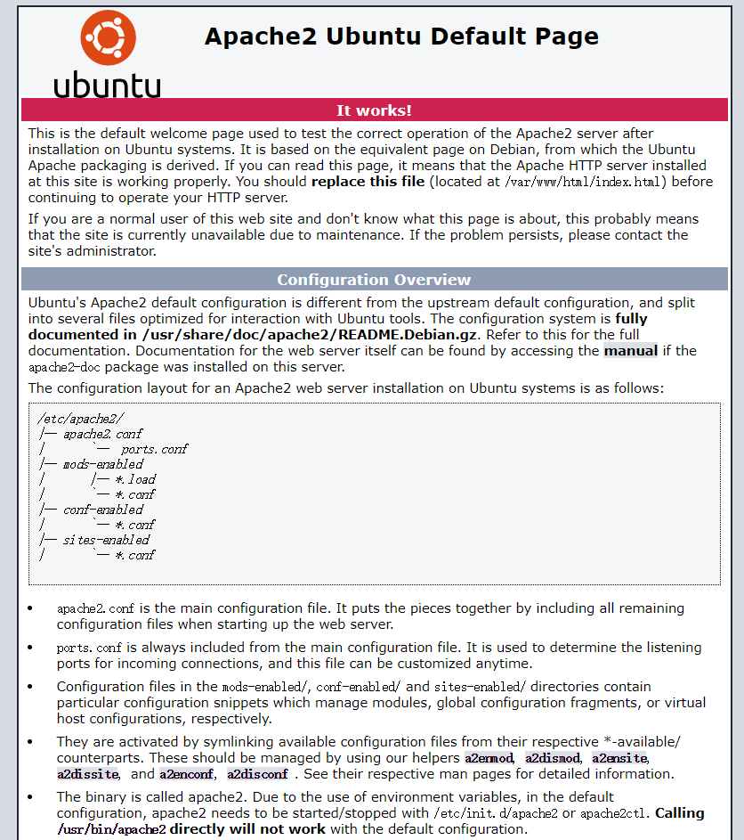
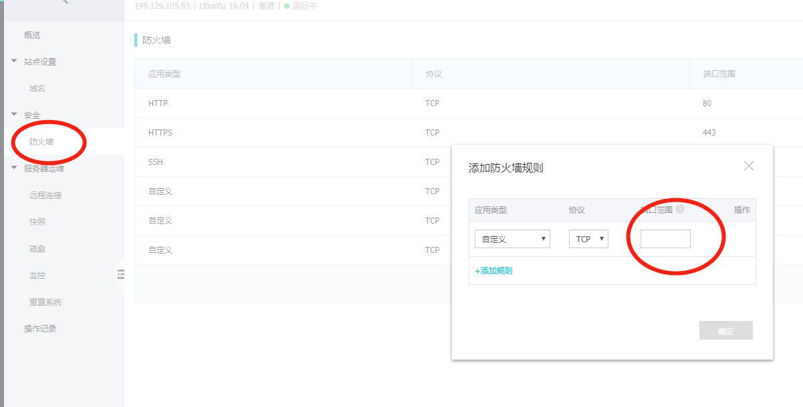

Django是一个，由Python写成的开放源代码的Web应用框架，在使用apache部署的时候走了好多坑这里记录下。
参考：
前提条件
- 一个服务器，我使用的是阿里云服务器。
- 推荐使用ubuntu镜像，因为软件集成度高（就是简单，傻瓜也会玩）。
- 已经使用Django搭建好web服务，如何搭建看Django教程。
这里只记录部署apache的坑了，其他上面都有详细讲解，就略了。
安装apache2和mod_wsgi
1 | sudo apt-get install apache2 |
看版本！！！（非常重要）
版本不同在配置上有区别，推荐使用比较新的版本，也就是2.4以上，如果是1，下面的配置是不一样的！！！1
2
3
4apachectl -v
Server version: Apache/2.4.18 (Ubuntu)
Server built: 2018-06-07T19:43:03
先别急着配置，看看能不能正常启动
1 | sudo service apache2 restart |
这时候正常情况会启动默认配置，使用浏览器访问你服务器的外网IP，如果正常会显示下图：

无法访问请检查阿里云的防火墙设置，看端口是否允许通过，浏览器默认是80，这里顺便加一个8080，供下面测试。

Apache2 Ubuntu Default Page 页面可以正常访问代表我们的apache安装成功，下面开始修改配置文件。
设置目录和文件的权限
一般目录权限设置为 755，文件权限设置为 644
假如项目位置在 /home/user/WebService （在WebService 下面有一个 manage.py，WebService 是项目名称）
1 | cd /home/user/ |
Django 的 settings.py 要设置清楚
media 文件夹一般用来存放用户上传文件，static 一般用来放自己网站的js，css，图片等，在settings.py中的相关设置
STATIC_URL 为静态文件的网址 STATIC_ROOT 为静态文件的根目录，
MEDIA_URL 为用户上传文件夹的根目录，MEDIA_URL为对应的访问网址
需要media的 要给media目录单独设置写的权限
ALLOWED_HOSTS是为了限定请求中的host值，以防止黑客构造包来发送请求。只有在列表中的host才能访问。
注意：在这里本人强烈建议不要使用通配符去配置，另外当DEBUG设置为False的时候必须配置这个配置。否则会抛出异常。*1
ALLOWED_HOSTS = ['*']
这里先写个*等全部调通了再改。。。
apache的配置文件
1 | cd /etc/apache2/sites-available |
在这里我们自己写个配置1
2
3
4
5
6
7
8
9
10
11
12
13
14
15
16
17
18
19
20<VirtualHost *:8080>
ServerName www.yourdomain.com
ServerAdmin youremail@mail.com
ErrorLog ${APACHE_LOG_DIR}/error.log
CustomLog ${APACHE_LOG_DIR}/access.log combined
Alias /static/ /home/user//WebService/static/
<Directory /home/user/WebService/static>
Options Indexes FollowSymLinks
AllowOverride None
Require all granted
</Directory>
WSGIScriptAlias / /home/user/WebService/WebService/wsgi.py
<Directory /home/user/WebService/WebService>
<Files wsgi.py>
Options Indexes FollowSymLinks
AllowOverride None
Require all granted
</Files>
</Directory>
</VirtualHost>
根据自己的情况改改，要注意目录要对，并且也写下面这个配置，apache版本不同配置是不同的！！！
Options Indexes FollowSymLinks
AllowOverride None
Require all granted
因为我们刚配置里写的是8080的端口，所以要把它加到监听列表里1
2
3
4
5
6
7
8sudo vim /etc/apache2/ports.conf
Listen 80
加一句
Listen 80
Listen 8080
wsgi.py文件修改
修改这个文件的目的就是把apache2和你的网站project联系起来
1 | import os |
激活新配
这里不用写路径
1 | sudo a2ensite mysite 或 sudo a2ensite mysite.conf |
重启apach1
sudo service apache2 restart
访问 你的网站，记得加端口号 0.0.0.0:8080
出错看log
1 | cat /var/log/apache2/error.log |
虚拟环境部署
通常我们的系统中会有多个python环境，使用virtualenv管理
源代码安装python3.7
上Python官网下载最新版本的source包，解压后进入安装目录，配置makefile，编译，安装。1
2
3
–prefix=/usr/local –enable-shared 的意思是创建共享链接，以便其他软件编译时调用
–with-ssl 的意思是允许ssl，pip安装的时候会用到
安装虚拟环境
Python 虚拟环境用于将软件包安装与系统隔离开来。
1 | 创建一个新的虚拟环境，方法是选择 Python 解释器并创建一个 ./venv 目录来存放它： |
编译mod_wsgi
mod_wsgi是一个apache的模块，用来把python web和apache连接起来，说实话，不咋好用，一定要下载最新版本，老版本会有不少问题
下载地址
解压后进入安装目录，配置makefile，编译，安装。
1 | ./configure --with-apxs=/usr/bin/apxs2 --with-python=py3.7env/venv/bin/python3.7 |
apxs2没有的话以防万一就装一下，–with-python指的是我们想要链接的python目标
配置Apache
在上面的配置基础上加两行1
2
3WSGIScriptAlias / /home/user/WebService/WebService/wsgi.py # 在这行下加俩
WSGIDaemonProcess yourdomain.com python-path=/home/user/WebService:/home/user/py3.7env/venv/lib/python3.7/site-packages
WSGIProcessGroup yourdomain.com
WSGIDaemonProcess 你的域名 python-path=刚才用virtualenv创建的python包的路径
重启apache
$ service apache2 restart
看log我们的apache成功的链接到python3.7：
Apache/2.4.18 (Ubuntu) mod_wsgi/4.6.5 Python/3.7 configured – resuming normal operations
如果出错
看错误代码慢慢查，我研究了一天才成功，首先就是编译的时候configure后一定要带对参数，缺少的库也要全手动安装，还有靠一部分运气才能成功。